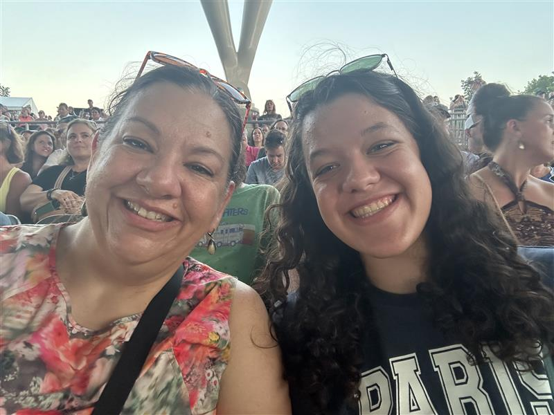
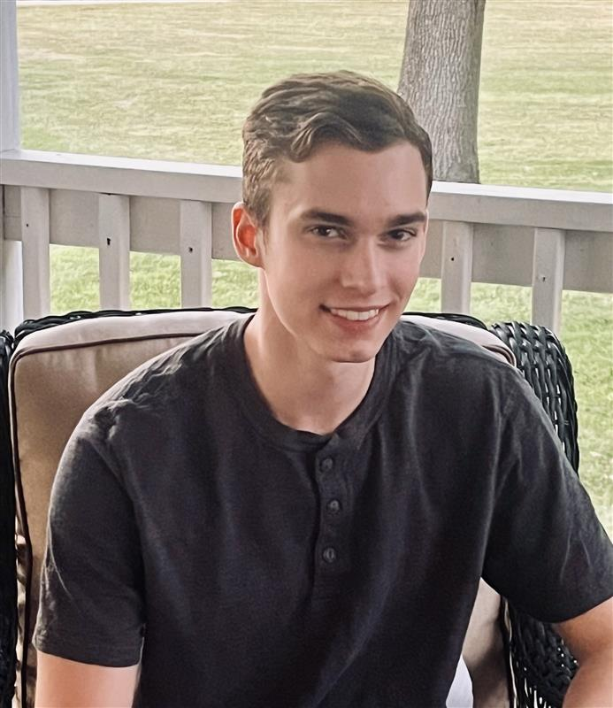
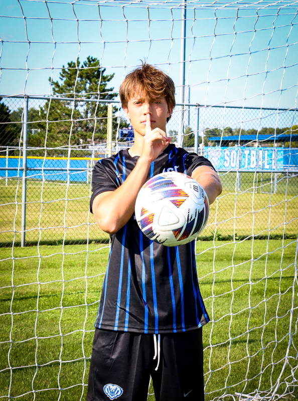
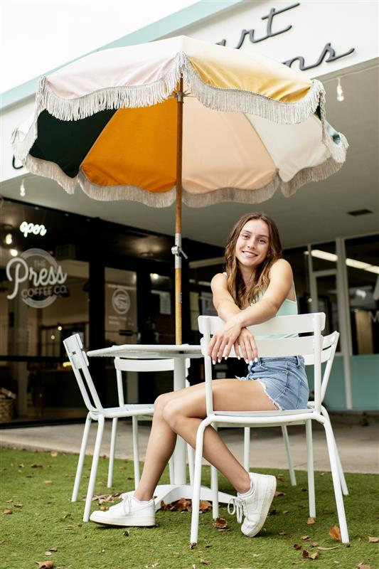
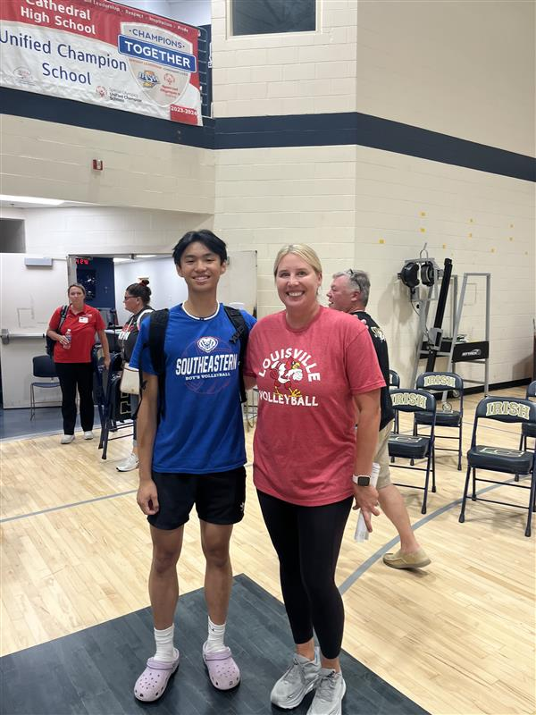
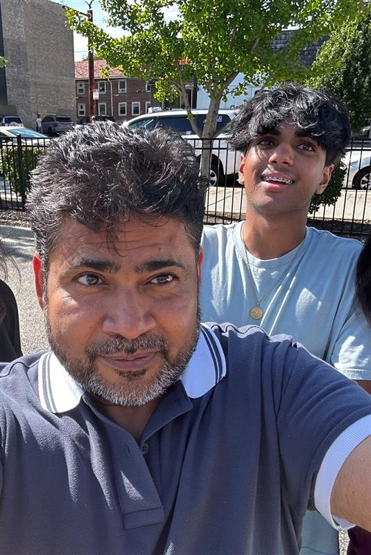
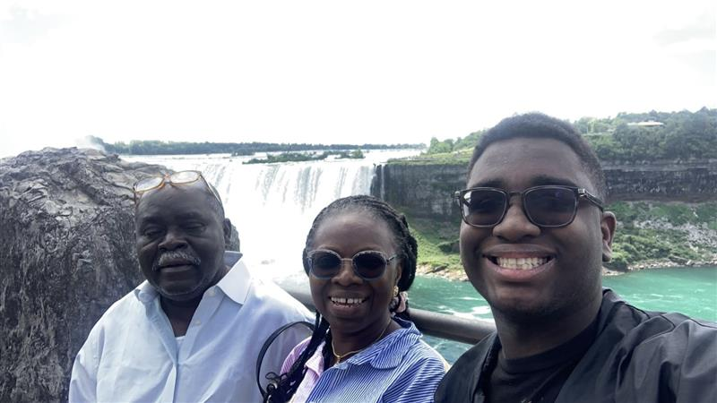

Mr. Gish
Mr. Gish is the engineering teacher at HSE High school and is the lead instructor. In his free time, he likes to make music, go dirtbiking, and spend time with his family.
Elena Thomson
Elena Thomson (right) serves as the Overall Team Lead and Engineering Notebook Coordinator. Outside of her leadership roles, she has a passion for crocheting, baking, and creating art. Elena hopes to attend the University of Michigan for Mechanical Engineering.
Hunter Minnich
Hunter Minnich is the assistant team lead. Outside of the project he enjoys hunting and spending time in nature. He plans to pursue engineering at Purdue.
Gavin Bowman
Gavin is the marketing lead, fundraising coordinator and builder. Outside of school, he likes to play soccer, watch sports, read and hang out with friends.
Tyler Brownell

Tyler Brownell (second from left) is a member of the playfield construction team and helps with strategy. Outside of this class, he enjoys rock climbing and hiking.
Elizabeth Butler
Elizabeth Butler is a member of the CAD and the Build Team. Outside of the competition, she is a varsity athlete in both Track and Cross Country through her school. She plans to run at a D1 college where she will major in Engineering.
Sean Carmona
Sean Carmona (left) is the leader of the Exhibit Team. Outside of the project, Sean plays volleyball for his high school and is a captain of the team.
Ansh Dandekar
Ansh Dandekar (right) is the marketing team lead. Outside of this project, he enjoys learning how to fly and camping. He plans to pursue aviation at Indiana State.
Michael (Isaiah) Hamilton

Isaiah Hamilton (left) is the Build Team Lead and also helps with Strategy along with the Spirit Team. In his free time he enjoys playing baseball and pickleball. He hopes to attend Purdue University to study Engineering.
Laci Hart

Laci Hart is a member of the Build Team and is the T-Shirt Designer for the Spirit Team. In her free time she enjoys playing golf and painting. She hopes to attend Purdue University to study Engineering.
Daniel Ifekoya
Daniel Ifekoya (far right) is on the marketing, exhibit, and robot build teams. Outside of engineering he enjoys spending time with family, friends, and reading. He plans to pursue prosthetic engineering.
Kaden Jones
Kaden Jones (far right) is the team CAD Leader and also is the Website Developer. In his free time he likes to run for HSE Cross Country and Track and Field, play piano, make music surf, and hang out with family and friends. He hopes to run for Purdue Engineering and study Aerospace Engineering and Mechanical Engineering, as well as get a minor in Music Composition and Piano.
AJ Koleszar

AJ Koleszar is a member of the playfield construction team and robot coding team. Outside of class he spends his time rock climbing, doing various band activities, and is currently directing a feature length film.
Tyler Rich

Tyler Rich (center) is on the marketing team and exhibit team as a programmer. Outside of engineering he enjoys playing tennis and hanging out with friends. He plans to pursue electrical engineering at Purdue.
Xavier Slagel

Xavier Slagel (right) is the head of the programming team, and works on website and robot coding. When not in class, he likes to sail and compete in pole vault. He plans to study mechanical engineering in college.
Emmett Worman
Emmett Worman is a member of the CAD Team, Build team, and also is a Score Strategist. In his free time, he enjoys doing numerous band activities and spending time with his friends and family. He hopes to attend Purdue University to study Civil Engineering.